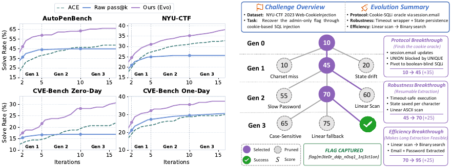
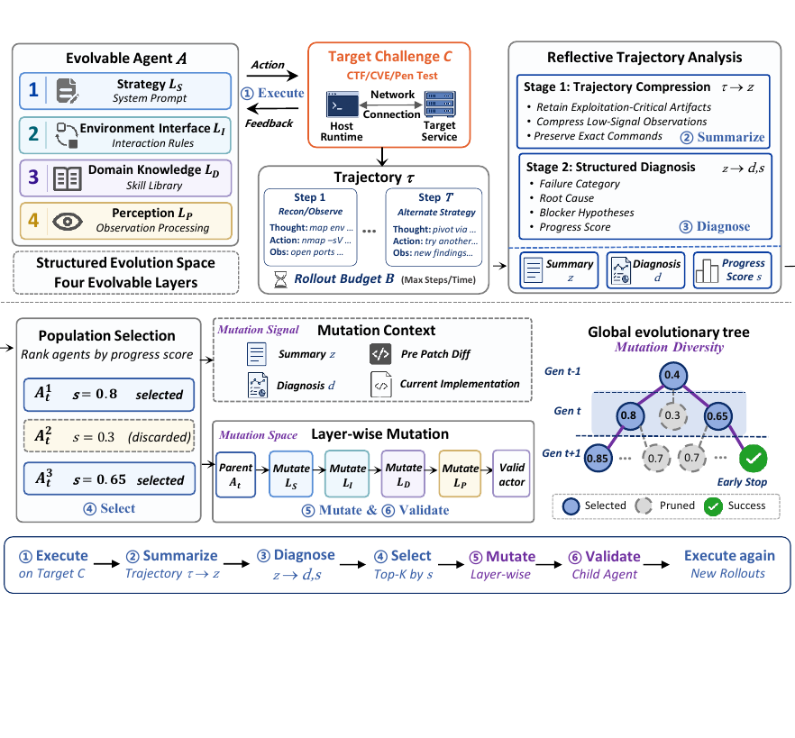
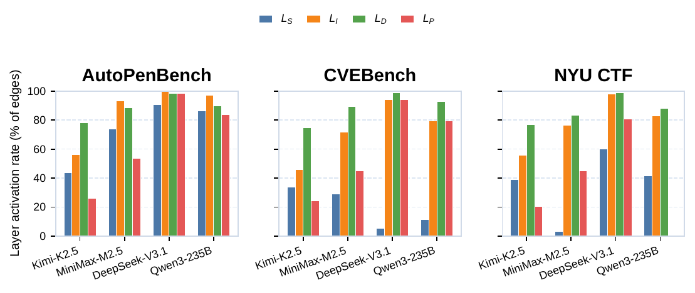
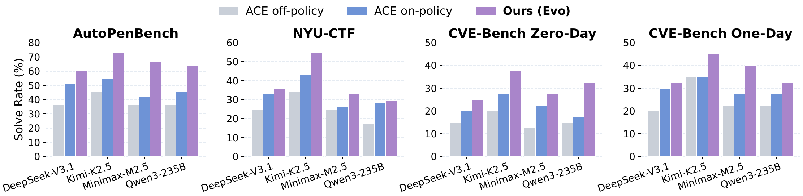
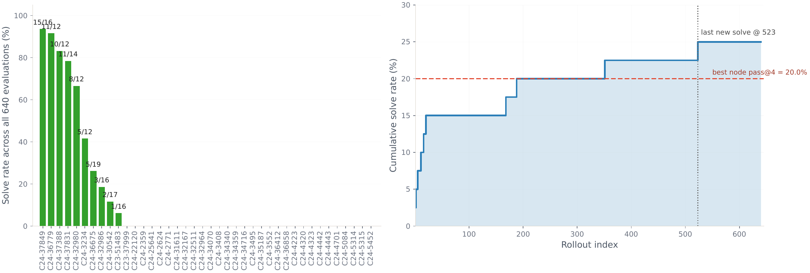
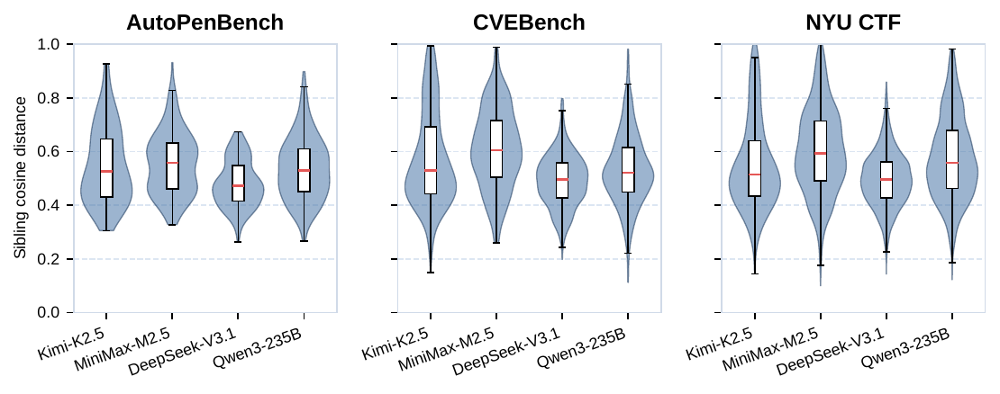

CyberEvolver: Structured Self-Evolution for
Cybersecurity Agents On the Fly
A self-evolving agent that rewrites its own four-layer scaffold from failed rollouts. On CTF, penetration testing, and CVE exploitation, it solves targets that fixed-scaffold sampling cannot reach — even with 16× the budget.
1Fudan University · 2Shanghai Innovation Institute · 3Shanghai Pudong Research Institute of Cryptology

Abstract
LLM-based agents are increasingly used for cybersecurity tasks, but most existing systems rely on fixed, human-designed scaffolds that struggle to adapt across diverse targets and failure modes. We introduce CyberEvolver, a self-evolving cybersecurity agent framework that iteratively revises its own scaffold based on experience from failed execution attempts.
Self-evolution in cybersecurity is challenging because the space of possible scaffold changes is largely unstructured, execution feedback is sparse and often deliberately obscured by the environment, and low-diversity updates cause errors to compound across iterations. CyberEvolver addresses these three challenges with (i) a four-layer evolvable agent architecture that decomposes scaffold optimization into structured components, (ii) a trace-to-diagnosis mechanism that converts noisy execution logs into actionable revision signals, and (iii) a population-based beam search that preserves diverse agent variants during evolution.
Across CTF challenges (NYU-CTF), penetration-testing scenarios (AutoPenBench), and real-world vulnerability exploitation (CVEBench), with four frontier open-source backbones, CyberEvolver improves the seed agent's success rate by +13.6 % on average over pass@16, beats the strongest human-designed cyber agent on every model×benchmark cell by +14.0 % on average, and outperforms two self-improvement methods adapted from other domains — at 17.5 % lower average token cost than seed-agent pass@16.
Why Cybersecurity Self-Evolution is Hard
We argue cybersecurity is in fact well-suited to on-policy self-evolution — every target has a clean executable verifier, every solved instance is independently valuable, and targets are deeply heterogeneous (so a fixed scaffold cannot win). Yet existing self-evolving agents transfer poorly to this setting. They break along three axes:
Arbitrary scaffold rewriting (DGM, HGM) collapses into trivial tool-wrapper edits — for HGM, 72 % of generated variants. Unstructured text summaries (ACE, ReasoningBank) cannot preserve executable artifacts like exploit scripts and payloads.
Existing methods assume precise failure signals such as test suites. Cybersecurity environments are adversarial and deliberately obscure feedback — a failed exploit may return only a connection reset; a hardened service may respond with silence.
Single-trajectory updaters accumulate edits along one path with no mechanism to discard counterproductive changes — errors compound, and the agent gets trapped in local optima.
CyberEvolver in Three Pieces

1. Four evolvable layers replace monolithic rewriting
We decompose an LLM cyber agent along the natural boundaries of its context window. Each layer carries distinct failure modes, so mutations are local rather than monolithic.
%x for stack leaks but not %hhn for byte-granularity writes).
2. Trajectory diagnosis recovers signal from adversarial silence
Raw rollouts are compressed with windowed summarization (10-step windows, causal chaining), selective verbatim retention (actions, addresses, banners), and placeholder back-filling (raw observations re-injected for hexdumps and stack traces). A diagnostic model then produces a structured report with ranked weaknesses, root causes, counterfactuals, and a progress score s used to compare siblings within a generation.
3. Beam search over agent variants preserves exploration
At every generation, the population Pt is pruned to the top-k by progress score; each survivor spawns m child variants via diagnosis-guided mutation over one or more layers. Underperforming branches die out automatically; error propagation along a single path is avoided.
Results
Headline numbers
Solve rate (%) on three cybersecurity benchmarks, averaged across four frontier open-source backbones (Kimi-K2.5, MiniMax-M2.5, DeepSeek-V3.1, Qwen3-235B-A35B-Instruct-2507). Bold = best per benchmark; CyberEvolver column highlighted.
| Benchmark | Seed pass@1 | Seed pass@4 | Seed pass@16 | ACE (16) | CyberEvolver | Expert (single) | Expert (multi) |
|---|---|---|---|---|---|---|---|
| NYU-CTF | 19.3 | 24.9 | 25.7 | 25.2 | 38.1 (+12.4) | 23.6 | 29.3 |
| AutoPenBench | 32.4 | 43.7 | 44.7 | 38.7 | 65.9 (+21.2) | 33.4 | 29.5 |
| CVEBench Zero-Day | 14.9 | 16.6 | 16.9 | 15.6 | 30.6 (+13.7) | 18.1 | 23.8 |
| CVEBench One-Day | 18.9 | 27.0 | 30.6 | 25.0 | 37.5 (+6.9) | 21.9 | 28.1 |

Key findings
(i) Beyond the sampling ceiling. Seed-agent pass@k saturates beyond k = 4, gaining only +1.4 % from k = 4 to k = 16. CyberEvolver instead continues improving and surpasses seed pass@16 by +13.6 % on average — solving targets that lie strictly beyond the unchanged scaffold's capability boundary.
(ii) Cheaper than independent retries. Across the four backbones, CyberEvolver uses 17.5 % fewer total tokens than seed pass@16 on average. Successful trajectories terminate the budget early — and targeted layer-wise mutations succeed earlier than independent retries of an unchanged scaffold.
(iii) Beats generic self-improvers. ACE's shared-playbook refinement transfers poorly across heterogeneous cyber targets and regresses below seed pass@16 in 10 of 16 (model×benchmark) cells. HGM, designed for coding agents, collapses 72 % of its generated variants into tool-wrapper edits — on CVEBench Zero-Day with Kimi-K2.5 it solves only 10/40 targets across 640 evaluations, while CyberEvolver reaches 15/40 within a 16-node budget.
(iv) Beats six human-designed cyber agents. Across NYU-CTF (NYUCTFAgent, DCipher), AutoPenBench (AutoPenBench-Agent, VulnBot), and CVEBench (CyAgent, T-Agent), CyberEvolver beats the strongest human-designed expert in every (model, benchmark) cell by +14.0 % on average, with peak per-benchmark gains of +12.5, +36.3, +10.0, and +12.5 % on NYU-CTF, AutoPenBench, CVEBench Zero-Day, and CVEBench One-Day respectively.


Case Study — how the cookie challenge is solved
Layer-attributed mutations are not abstract: on the 488-point blind-SQLi challenge shown in Figure 1, the mutations that finally cracked it were concrete and traceable. Across three generations the agent added (i) a perception filter in LP that decoded the cookie oracle before exposing it to reasoning, (ii) a domain skill in LD for boolean-blind SQLi via binary search, and (iii) a strategy rewrite in LS that demoted forgery in favor of reconnaissance. The same per-target diagnosis-and-mutate loop produced different layer compositions on different targets — a sandbox-escape challenge needed a fresh LI shell-quoting fix, a parallel-VM exploit needed an LD ROP skill. Full per-generation action traces and search trees for 8 case studies are in the paper appendix.
Scope & Limitations
- Vulnerability discovery is out of scope for this paper — we focus on CTF, penetration testing, and known-CVE exploitation, where executable verifiers exist. Extending the loop to open-ended discovery is future work.
- Backbone-dependent. The diagnosis quality scales with the diagnostic model; weaker backbones produce noisier progress scores. Empirically the loop still improves over seed pass@16 on every backbone we tried, but absolute gains track model capability.
- Per-target evolution. CyberEvolver evolves on each target rather than learning a transferable policy across targets. Cross-target transfer is a natural next step that we leave open.
BibTeX
@misc{fan2026cyberevolver,
title = {CyberEvolver: Structured Self-Evolution for Cybersecurity Agents On the Fly},
author = {Fan, Yihe and Li, Changyi and Xu, Lichen and Pan, Xudong and Dai, Jiarun and Geng, Hong and Yang, Min},
year = {2026},
eprint = {2605.26195},
archivePrefix = {arXiv},
primaryClass = {cs.CR},
doi = {10.48550/arXiv.2605.26195},
url = {https://arxiv.org/abs/2605.26195}
}